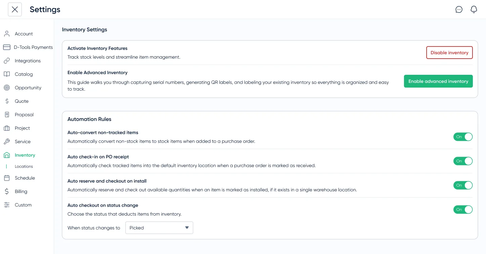

Inventory was both a workflow gap and a sales blocker. Enterprise prospects expected it to connect with purchasing and project work, while existing customers relied on spreadsheets or external tools because the product lacked a trustworthy source of truth.
We designed Inventory Management into a real-time system spanning projects, locations, and purchasing, reducing manual reconciliation, improving accuracy, and helping drive an 18% increase in recurring revenue.
Project managers spent hours every week reconciling stock across spreadsheets and external tools, and enterprise prospects increasingly expected inventory to be part of a modern operations platform. Without integrated inventory, teams lacked a trustworthy source of truth and D-Tools risked losing deals to competitors with more complete workflows.
I mapped how teams tracked inventory outside the product, usually across spreadsheets or paid tools like Jetbuilt. One power user maintained a master spreadsheet with 14 tabs: one per project, plus cross-reference sheets, reconciliation logs, and a manual low-stock tracker highlighted in yellow. It took her two hours a day to keep current, and decisions were still made from stale data.
Across 6 user interviews and workflow mapping sessions, the pattern was consistent:
We could have shipped a simpler, spreadsheet-like solution with periodic updates.
Instead, I pushed for a real-time, unified inventory system across projects and locations (such as warehouses, vans, and job sites). While this added technical complexity, it eliminated duplicate sources of truth and ensured teams could trust inventory data everywhere.
The hardest challenge was determining how much enterprise capability needed to exist on day one.
Enterprise customers required sophisticated workflows, but exposing every capability immediately would have created unnecessary complexity for smaller customers.
The solution was creating an enterprise-capable foundation while keeping day-to-day workflows approachable.
Some users manually reconciled counts, split data across tabs, and made decisions from stale information.
Most users used another piece of software, like Jetbuilt, to manage inventory. Multiple tools meant more error-prone workflows and extra costs for users.
A single source of truth surfaced stock risk early, reduced reconciliation, and made decisions faster and more reliable.
The core design challenge was not just showing inventory. It was defining how inventory changed state across purchasing, receiving, project allocation, location transfers, and asset-level tracking. A flat quantity would not explain why an item was available, allocated, incoming, or low-stock.
I worked with PM and engineering to align on a real-time model across projects, stock, and locations. That added complexity, but it removed duplicate sources of truth and made inventory data trustworthy everywhere users encountered it.

For handoff, I documented how allocations, multi-location states, and receiving/reordering rules affect available inventory, so UI behavior stays consistent as the system model gets implemented. The shared data model was aligned with engineering first, so the UI explains state rather than just showing flat quantities.
I ran three rounds of high-fidelity Figma tests to validate receiving, alerts, multi-location inventory, and reordering flows. Testing confirmed the quantity-first default was easier for smaller teams, while asset-level tracking remained necessary for larger teams with accountability requirements.
The system replaced fragmented tracking with a single source of truth, reducing reconciliation time, improving project accuracy, and surfacing unused inventory.
One customer uncovered thousands of dollars in unused equipment, highlighting how much value had been hidden in disconnected workflows.
The release removed a recurring blocker in enterprise sales conversations and contributed to an 18% increase in recurring revenue over the following year.
The biggest lesson was that operational products earn trust through state clarity. Users did not just need to know how many items were in stock; they needed to understand why the number was trustworthy, where it came from, and what would happen next.